Overview
Give a high-level overview of what you implemented in this project. Think about what you've built as a whole. Share your thoughts on what interesting things you've learned from completing the project.
Part 1: Masses and springs
Bending and structural constraints both act on point masses in the horizontal and vertical directions, while shearing acts on diagonal point masses. This is why when shearing is turned off we see the diagonal lines disappear and when only shearing is on, we see only diagonal lines.
| All Constraints | No Constraints |
| Only Shearing | No Shearing | 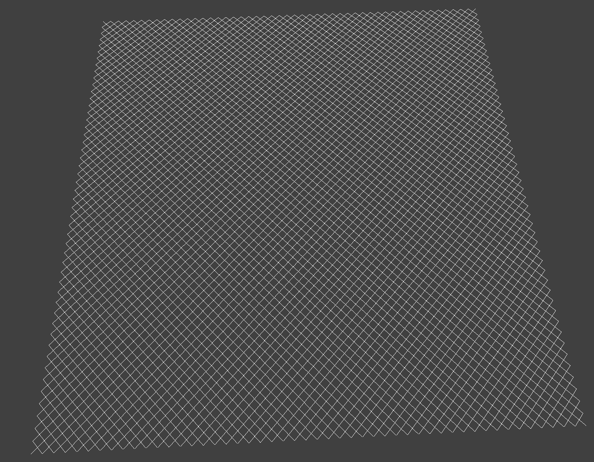 | 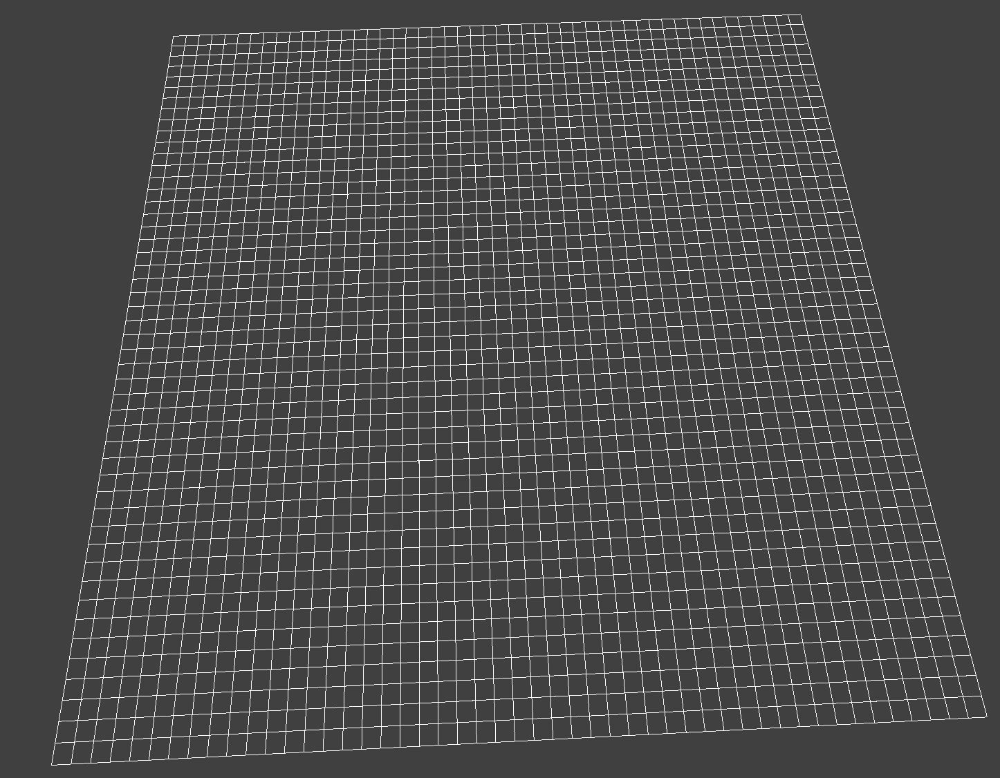 |
Part 2: Simulation via numerical integration
Varying the spring constant ks, changes the taughtness of the cloth. With a low ks like 5, the cloth is very loose. It bows into a vew low arch and has many ripples. As the spring constant increases to 500 and then to 50,000, the arch shrinks until its nearly flat and the number of ripples decreases. If you turn the spring constant too high it gets to a point where the forces the springs are applying are so great that the cloth is constantly flung around and never settles.
| ks = 5 | ks = 500 |
| 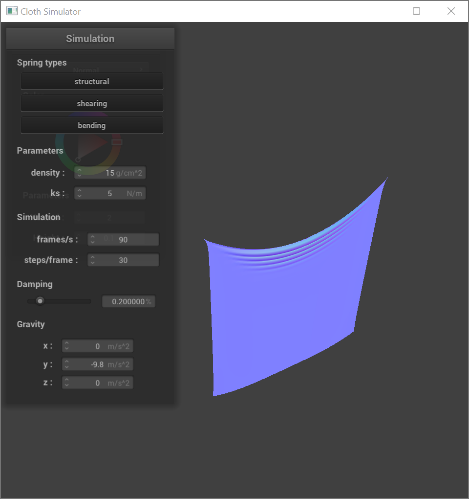 | 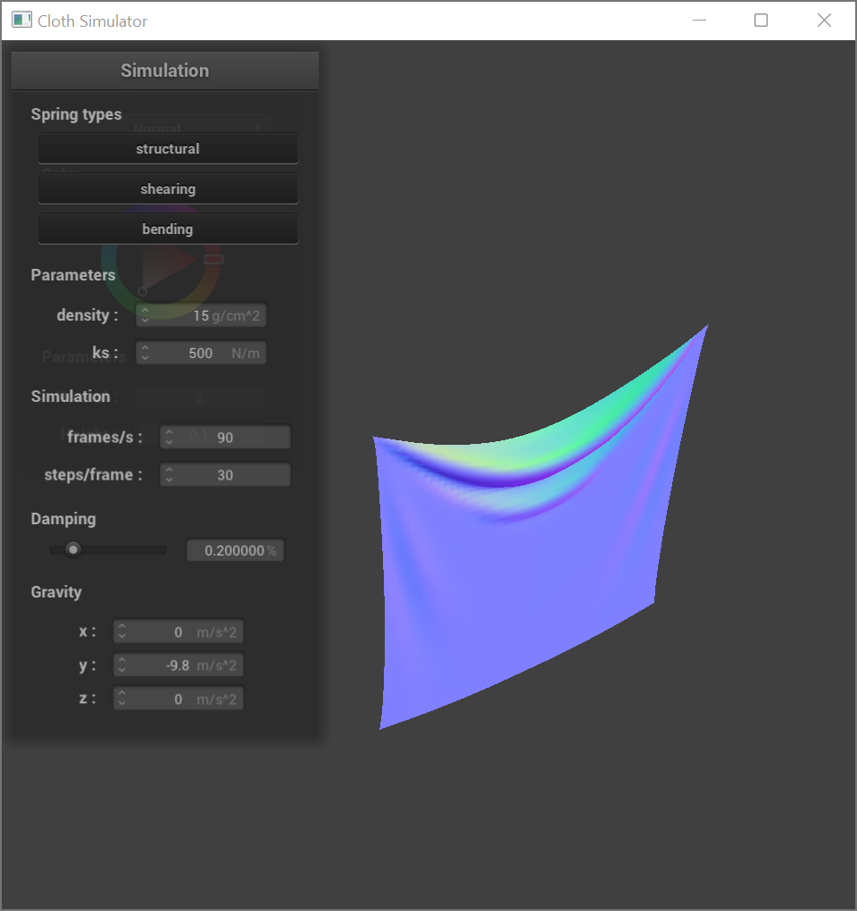 |
| ks = 50,000 | ks = 500,000 | 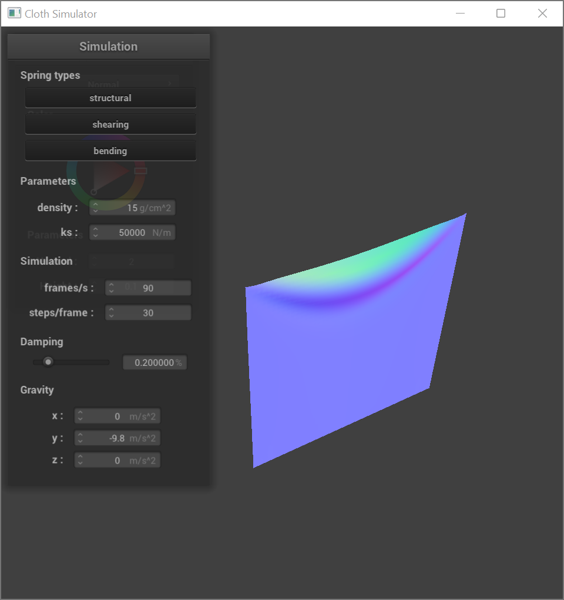 | 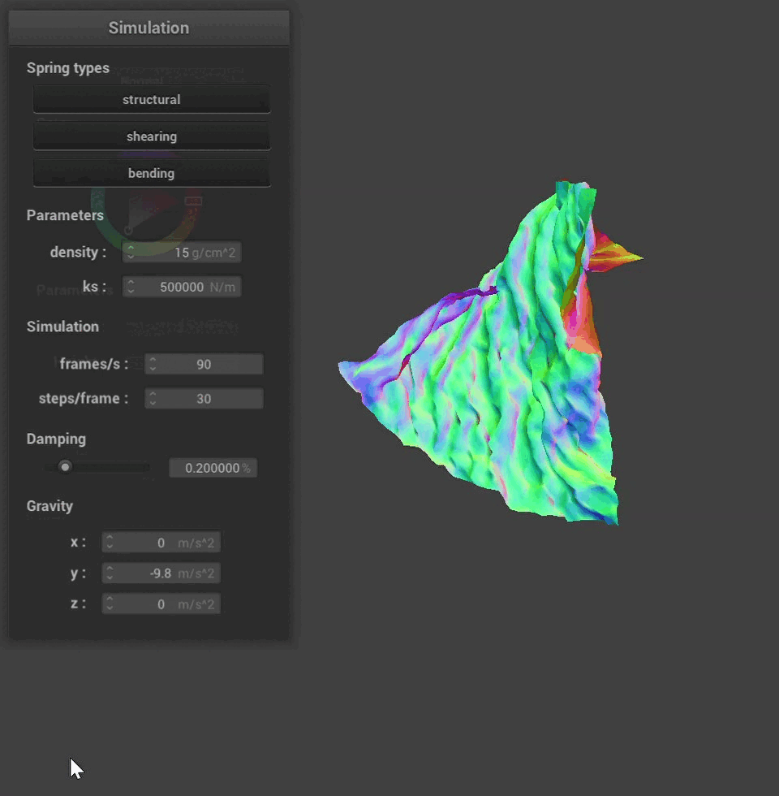 |
Varying the density is like the opposite of varying the spring constant. Low desnities produce similar effects to high spring constants and high densities produce similar effects to low spring constants. This is because acceleration can be described by this equation: \(a = \frac{F}{m}\). We can replace Force with Hooke's law giving: \( a = \frac{k(l -x)}{m} \). We can see that the acceleration of each point mass in the cloth is proportional to the spring constant and inversely proportional to its mass. This is why density and the spring constant have inverse effects.
| density = 1 | density = 15 |
| 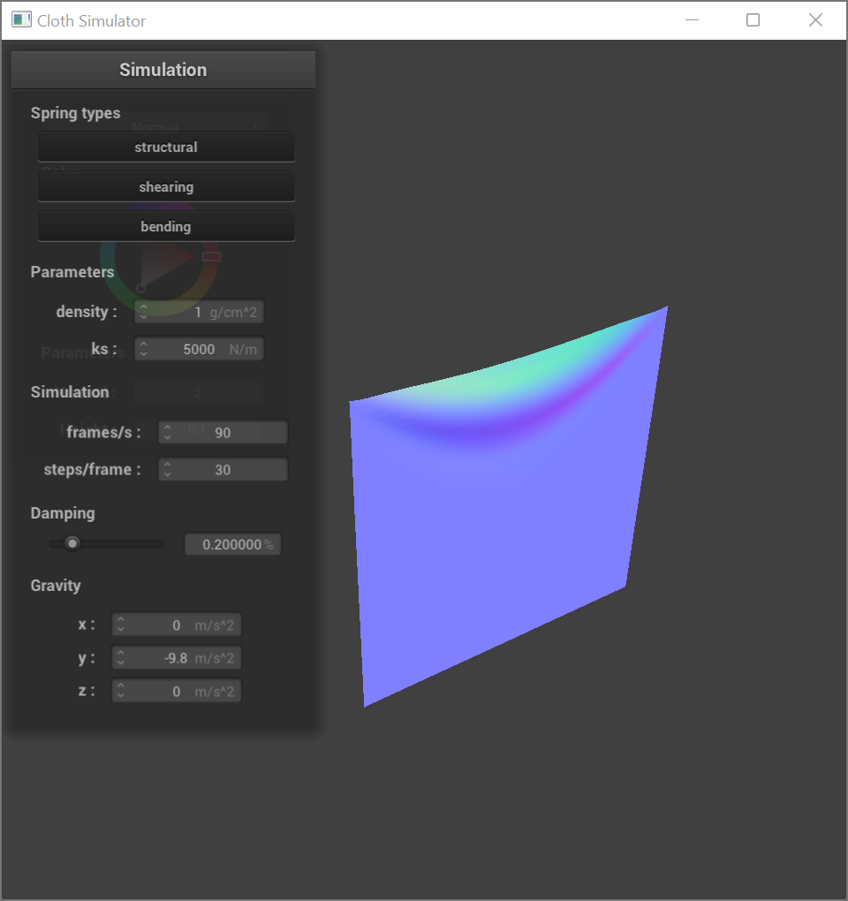 | |
| density = 1,500 | density = 150,000 | 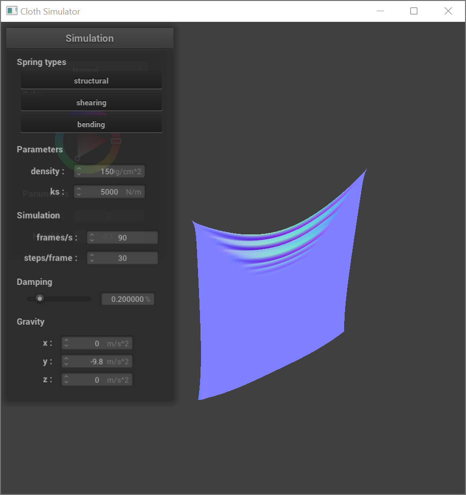 | 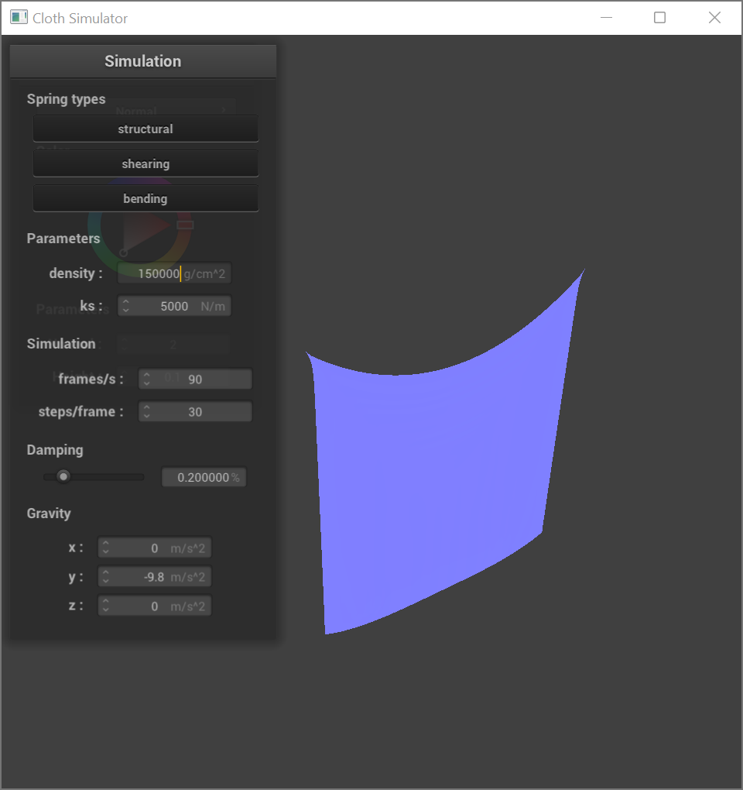 |
Verying the damping has very different effects than the two parameters above. Damping seems to effect mostly the speed at which the cloth moves. Low damping allows the cloth to swing down rapidly and then continue oscillating for a while. At the extreme where the damping is 0 the cloth oscillates forever, never coming to rest. With high damping the cloth falls down slowly as if it were going through water.
Part 3: Handling collisions with other objects
ks = 5000 |
ks = 500 |
ks = 50000 |
Comparing Figure 1.a, the sphere is using the default ks = 5000, and
Figure 1.b, where ks = 500, Figure 1.b looks more droopy and Figure
1.a has larger folds. Figure 1.c, where ks = 50000, has even larger
folds than 1.a and the cloth doesn't follow the sphere's shape as well as the cloth
in Figure 1.a.
Part 4: Handling self-collisions
|
|
|
|
|
|
|
As seen above, a higher density causes the cloth to fold into itself with sharper creases. Similarly, lowering the ks also causes the cloth to fold into iteself with sharper creases.
Part 5: Shaders
Shaders are used to parallize graphics computations through the GPU. With openGL, .vert files calculate the screen space position of a vertex as well as other things that could be useful like the object space position. If any alterions to the geometry are needed they are done there. Then the .frag file is used to calculate the color of pixels after rasterization. It can use things that were calculated by the .vert. Since both of these files act on very small isolated elements of the image, it can be easily parallelized on the GPU.
Many of the shaders we implemented in this section, made use of Blinn-Phong shading. It can be described with the following equation \[ L = k_aI_a \ + \ k_d\left(\frac{I}{r^2}\right)\textrm{max}(0,n\cdot l) \ + \ k_s\left(\frac{I}{r^2}\right)\textrm{max}(0,n\cdot h)^p \] This equation has a lot of components but it can be thought of as just suming together light from three different sources. The left most component is the ambient light. All fragments will receive this ambient light equally. The middle is the diffuse term. This accounts for light that is dispersed when it hits the object. It depends on \(n \cdot l\) where \(l\) is the direction of the incoming light ray and \(n\) is the normal. This is term is maximized when the incoming light is parallel to the normal. In other words, when the light is orthogonal to the surface. The right-most term is the specular component. This accounts for light that reflects off the surface like a mirror. Specular light reflects incoming rays about the surface normal, so that the surface normal bisects the incoming and outgoing rays. This is way there is an \(n \cdot h\) term. \(h\) is the bisector of the incoming and outgoing rays, therefore the specular light is maximized when the incoming and outgoing light rays are bisected by the normal. The exponent \(p\) is used to sharpen the specular reflection. Since \(n \cdot h \leq 1 \), the higher the power \(p\) the smaller it the specular component will be. Only reflections that are very close to perfectly specular will retain any power.
| Ambient | Diffuse |
| 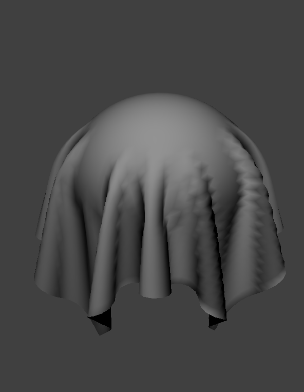 | |
| Specular | Phong | 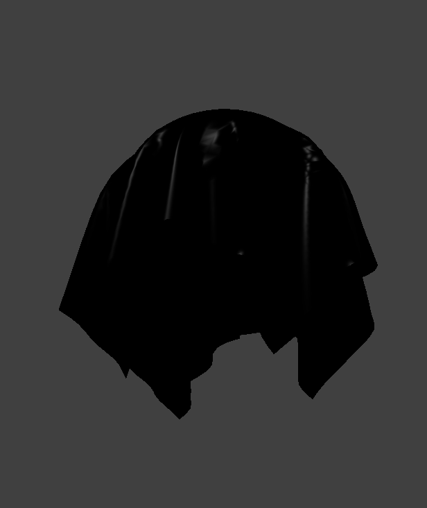 | 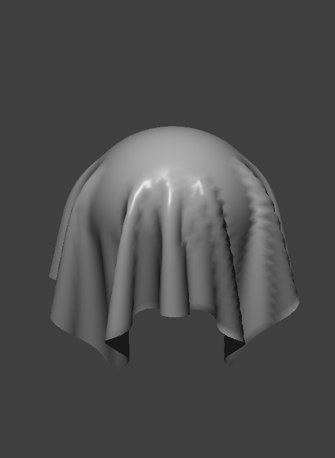 |
|
|
|
|
As seen above, while you can see the texture on both the sphere using either bump or displacement mapping, the latter shows the actual shape on the cloth, too. You can most notice this effect in by comparing the cloth's crease in Figure 5.b and 5.c. In bump mapping, we are mapping the texture onto the objects in such a way that forms an illusion of detail, while in displacement mapping, we map the actual height of the detail.
|
|
|
|
|
|
Comparing Figures 5.d and 5.e to Figures 5.f and 5.g respectively, we see that chaning the sphere mesh's coarness from 16 to 128 causes the texture of the cloth look more stretched out around the sphere.
|
|
|